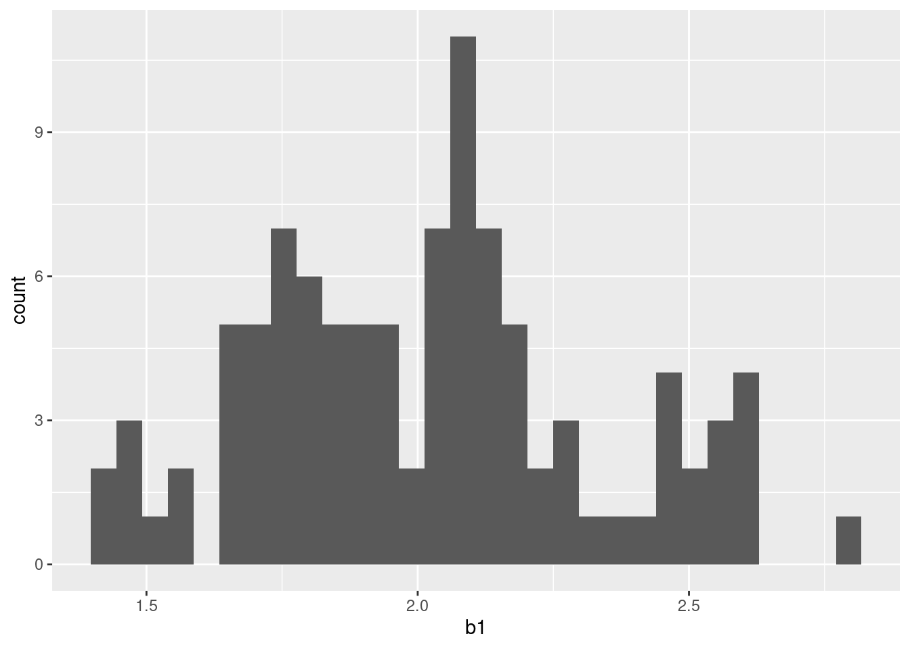

library(tidyverse)12 Simulations
12.1 The Components of a Simulation
12.1.1 Setting up Xs (exogenous variables)
Typically use mvrnorm() in the MASS package to produces a set of \(X\) that have some specified population means, variances, and covariances. In our example, we will simulate 3 variables with differing means, variances = 1, and covariances = 0. Of course, you could do whatever you need here.
- Specify population means
means <- c(4, 6, 10)- Variance/covariance matrix. Can do this with uncorrelated Xs with variances of 1 using
diag(). Or can specific specific variances and covariances
sigma <- diag(3)
sigma [,1] [,2] [,3]
[1,] 1 0 0
[2,] 0 1 0
[3,] 0 0 1- Here we demonstrate use of matrix for specific sigma (but with same values as above)
sigma <- matrix(c(1, 0, 0,
0, 1, 0,
0, 0, 1),
nrow = 3, byrow = TRUE) Now we can generate data for a specific \(N\) (in this case, 1000)
n_obs <- 1000
x <- MASS::mvrnorm(n = n_obs, mu = means, Sigma = sigma) |>
magrittr::set_colnames(str_c("x", 1:length(means))) |>
as_tibble() x |> head()# A tibble: 6 × 3
x1 x2 x3
<dbl> <dbl> <dbl>
1 5.98 4.85 9.33
2 5.35 5.31 9.12
3 3.20 5.21 10.3
4 2.27 5.17 10.2
5 4.55 6.62 11.3
6 4.53 7.34 10.4 x |> summarize(across(everything(), list(mean = mean, var = var)))# A tibble: 1 × 6
x1_mean x1_var x2_mean x2_var x3_mean x3_var
<dbl> <dbl> <dbl> <dbl> <dbl> <dbl>
1 4.00 0.961 5.98 0.936 9.99 0.977cor(x) x1 x2 x3
x1 1.00000000 -0.01226456 0.04747869
x2 -0.01226456 1.00000000 0.05169929
x3 0.04747869 0.05169929 1.0000000012.1.2 Defining a Data Generating Process (DGP) for a Quantitative Y
We start with dataframe \(x\)
- Add an intercept as first column
x <- x |>
mutate(x0 = 1) |>
relocate(x0)
head(x)# A tibble: 6 × 4
x0 x1 x2 x3
<dbl> <dbl> <dbl> <dbl>
1 1 5.98 4.85 9.33
2 1 5.35 5.31 9.12
3 1 3.20 5.21 10.3
4 1 2.27 5.17 10.2
5 1 4.55 6.62 11.3
6 1 4.53 7.34 10.4 - Set parameter estimates. This includes \(b_0\) as the first entry
b <- c(100, 2, 5, 1)- Set standard deviation of error
e <- 10- Calculate Y and put it all in a dataframe
d <- x |>
mutate(y = rowSums(t(t(x)*b)) + rnorm(n_obs,
mean = 0,
sd = e))
head(d)# A tibble: 6 × 5
x0 x1 x2 x3 y
<dbl> <dbl> <dbl> <dbl> <dbl>
1 1 5.98 4.85 9.33 153.
2 1 5.35 5.31 9.12 140.
3 1 3.20 5.21 10.3 151.
4 1 2.27 5.17 10.2 164.
5 1 4.55 6.62 11.3 149.
6 1 4.53 7.34 10.4 172.12.1.3 Wrap it all in a function
get_data <- function(s, n_obs, means, sigma, b, e) {
x <- MASS::mvrnorm(n = n_obs, mu = means, Sigma = sigma) |>
magrittr::set_colnames(str_c("x", 1:length(means))) |>
as_tibble() |>
mutate(x0 = 1) |>
relocate(x0)
x |>
mutate(y = rowSums(t(t(x)*b)) + rnorm(n_obs, 0, e)) |>
mutate(s = s) |>
relocate(s)
}Now we can use this function to simulate a data set with any properties
get_data(1,
n_obs <- 1000,
means <- c(4, 6, 10),
sigma <- diag(3),
b <- c(100, 2, 5, 1),
e <- 10)# A tibble: 1,000 × 6
s x0 x1 x2 x3 y
<dbl> <dbl> <dbl> <dbl> <dbl> <dbl>
1 1 1 2.97 6.10 9.42 147.
2 1 1 3.56 5.75 9.32 145.
3 1 1 3.74 5.89 9.97 130.
4 1 1 4.83 5.35 8.67 142.
5 1 1 3.83 5.70 9.19 151.
6 1 1 4.40 6.46 9.95 164.
7 1 1 3.79 6.96 9.77 163.
8 1 1 4.04 5.21 11.9 163.
9 1 1 4.29 7.14 11.1 142.
10 1 1 4.53 5.95 9.21 148.
# ℹ 990 more rows12.1.4 Iterate over simulations
Lets pretend we want 100 simulated datasets
- It is important to set a seed to make these datasets reproducible
- We can use map (or
future_map()) to iterate overget_data() - We can use list columns for this so we get a dataframe with rows for each simulated dataset and the full dataset for each entry for the
datacolumn
n_sims <- 100 # this would generally be much higher!
n_obs <- 1000
means <- c(4, 6, 10)
sigma <- diag(3)
b <- c(100, 2, 5, 1)
e <- 10
sims <- 1:n_sims |>
map(\(s) get_data(s, n_obs, means, sigma, b, e)) |>
list_rbind() |>
nest(.by = s,
.key = "data")
head(sims)# A tibble: 6 × 2
s data
<int> <list>
1 1 <tibble [1,000 × 5]>
2 2 <tibble [1,000 × 5]>
3 3 <tibble [1,000 × 5]>
4 4 <tibble [1,000 × 5]>
5 5 <tibble [1,000 × 5]>
6 6 <tibble [1,000 × 5]>We can now use this df with list columns to calculate whatever we are testing for our simulation.
In this trivial example, lets show that the parameter estimate for \(x_1\) matches what we set. We will also use list columns to store intermedidate results (e.g., the lm)
- write function to use our simulated data to estimate \(b_1\) (Note that we could have used an anonymous function for this, but I think its cleaner to have a named function)
fit_lm <- function(d){
lm(y ~ x1 + x2 + x3, data = d)
}- Now fit this model for each simulated dataset and save model in list column
- Notice we now have a column that stores these models
sims <- sims |>
mutate(model = map(data, fit_lm))
head(sims)# A tibble: 6 × 3
s data model
<int> <list> <list>
1 1 <tibble [1,000 × 5]> <lm>
2 2 <tibble [1,000 × 5]> <lm>
3 3 <tibble [1,000 × 5]> <lm>
4 4 <tibble [1,000 × 5]> <lm>
5 5 <tibble [1,000 × 5]> <lm>
6 6 <tibble [1,000 × 5]> <lm> Now lets extract \(b_1\) from the models and save in their own column. We can write a function for this and use broom::tidy()
get_b1 <- function(model){
model |>
broom::tidy() |>
filter(term == "x1") |>
pull(estimate)
}
sims <- sims |>
mutate(b1 = map(model, get_b1))
head(sims)# A tibble: 6 × 4
s data model b1
<int> <list> <list> <list>
1 1 <tibble [1,000 × 5]> <lm> <dbl [1]>
2 2 <tibble [1,000 × 5]> <lm> <dbl [1]>
3 3 <tibble [1,000 × 5]> <lm> <dbl [1]>
4 4 <tibble [1,000 × 5]> <lm> <dbl [1]>
5 5 <tibble [1,000 × 5]> <lm> <dbl [1]>
6 6 <tibble [1,000 × 5]> <lm> <dbl [1]>Now we can unnest the column for b1 and do analyses. Of course, we could unnest other columns if we needed access to the simuated data or the linear models we fit
sims <- sims |>
unnest(b1)
head(sims)# A tibble: 6 × 4
s data model b1
<int> <list> <list> <dbl>
1 1 <tibble [1,000 × 5]> <lm> 1.80
2 2 <tibble [1,000 × 5]> <lm> 2.19
3 3 <tibble [1,000 × 5]> <lm> 2.47
4 4 <tibble [1,000 × 5]> <lm> 1.73
5 5 <tibble [1,000 × 5]> <lm> 2.40
6 6 <tibble [1,000 × 5]> <lm> 1.54# mean and standard error of sampling distribution
sims |>
summarize(mean = mean(b1), sd = sd(b1))# A tibble: 1 × 2
mean sd
<dbl> <dbl>
1 2.08 0.319# plot of the sampling distribution
sims |>
ggplot(data = sims,
mapping = aes(x = b1)) +
geom_histogram(bins = 30)
12.2 Other Extensions and Loose Ends
12.2.1 Binary Y
In the example above, we simulated a quantitative Y that was a linear function of 3 Xs. Often, we need to simulate binary outcomes. This is easy too.
We typically simulate binary outcomes using the logistic function. You could use other functional forms but this one works well for most our needs.
We can use our same X
head(x)# A tibble: 6 × 4
x0 x1 x2 x3
<dbl> <dbl> <dbl> <dbl>
1 1 5.98 4.85 9.33
2 1 5.35 5.31 9.12
3 1 3.20 5.21 10.3
4 1 2.27 5.17 10.2
5 1 4.55 6.62 11.3
6 1 4.53 7.34 10.4 - But now the DGP for Y is different. First we need to calculate the probability of the positive class as a function of X
calc_p <- function(d, b0, b1, b2, b3){
exp(b0 + b1*x$x1 + b2*x$x2 + b3*x$x3) /
(1 + exp(b0 + b1*x$x1 + b2*x$x2 + b3*x$x3))
}- Now we can apply this over the rows of d
d <- x |>
mutate(p = calc_p(x, 1,2,3,4))
head(d)# A tibble: 6 × 5
x0 x1 x2 x3 p
<dbl> <dbl> <dbl> <dbl> <dbl>
1 1 5.98 4.85 9.33 1
2 1 5.35 5.31 9.12 1
3 1 3.20 5.21 10.3 1
4 1 2.27 5.17 10.2 1
5 1 4.55 6.62 11.3 1
6 1 4.53 7.34 10.4 1- And now we can use the binomial distribution to get binary outcome based on these probabilities
d <- d |>
mutate(y = rbinom(1000,1,p))
head(d)# A tibble: 6 × 6
x0 x1 x2 x3 p y
<dbl> <dbl> <dbl> <dbl> <dbl> <int>
1 1 5.98 4.85 9.33 1 1
2 1 5.35 5.31 9.12 1 1
3 1 3.20 5.21 10.3 1 1
4 1 2.27 5.17 10.2 1 1
5 1 4.55 6.62 11.3 1 1
6 1 4.53 7.34 10.4 1 1- And of course, we can wrap this all up into one function to simulate these data
get_binary_data <- function(s, n_obs, means, sigma, b) {
x <- MASS::mvrnorm(n = n_obs, mu = means, Sigma = sigma) |>
magrittr::set_colnames(str_c("x", 1:length(means))) |>
as_tibble() |>
mutate(x0 = 1) |>
relocate(x0)
calc_p <- function(x, b){
exp(b[1] + b[2]*x$x1 + b[3]*x$x2 + b[4]*x$x3) /
(1 + exp(b[1] + b[2]*x$x1 + b[3]*x$x2 + b[4]*x$x3))
}
x |>
mutate(p = calc_p(x, b)) |>
mutate(y = rbinom(nrow(x), 1, p))
}From here, you can now pick up as before for the quantitative example
12.2.2 Fixing the variance of Y to set value
- insert notes from markus
- Talk with markus about need for scaled Y and possible use of mvrnorm() for all variables
12.2.3 Converting between correlation and covariance matrices
MASS::mvrnorm() takes sigma (the variance/covariance matrix). Sometimes, we might want to think in terms of correlations.
Here is a function to convert a correlation matrix to a variance/covariance matrix
cor2cov <- function (r, sd){
diag(sd) %*% r %*% diag(sd)
}r <- matrix(c(1.0, 0.4, 0.3,
0.4, 1.0, 0.5,
0.3, 0.5, 1.0),
nrow = 3, byrow = TRUE)
sd <- c(5, 10, 2)
cor2cov(r, sd) [,1] [,2] [,3]
[1,] 25 20 3
[2,] 20 100 10
[3,] 3 10 4